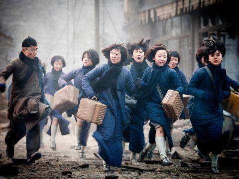

The film I chose is called Flowers of War, which takes the nanjing Massacre as the background of The Times.The film tells the story of the Japanese occupation of Nanjing. A large number of refugees on the streets were killed by the Japanese army, but a foreign church has become a refuge for these refugees, there are 13 prostitutes and a dozen female students and several wounded soldiers in the foreign church. This also shows the superiority of Orientalism. Westerners become the saviour of the Chinese at a critical moment, and also express the idea that only the West can save the East.

Said(1978) pointed out that orientalism was dominated by the reorganization of the West and had authority over the East (p.3). As reflected in the film, the female student is embarrassed by the arrival of her first period, believing that women are dirty and sinful and that she is of the same kind as the prostitutes in the church. This also shows that the West imposes morality and ideology on the East through the spread of religion, and that the East has no power to change this state".The relationship between East and West is one of domination or power. Complex hegemony of varying degrees "(said,1978, p.5). In the film, even though the prostitute is ready to go out of the church to save the girl, the church bell rings and the schoolgirl chooses to go downstairs to listen to the bell even at the risk of her life. And because of the baptism of the bells thirteen prostitutes also boldly out of the church to save his compatriots, which reflects a kind of religious hegemony.
In the film, a priest turns down a prostitute who asks for his help. Although he is a Western priest in the East, from the side, we can see that his Orientalism expresses the deep contempt of The Europeans for the Oriental people. This is precisely what Said(1978) claimed that "Orientalism has never been far from what Danys Hay called the European ideal, that is, the collective concept of distinguishing between" we "Europeans and all" non-Europeans " (p.7). Through this film, it is obvious that the West imposes the western cultural concepts and ideologies on the East through preaching, and it also reflects the fact that the eastern culture is dominated by the Western culture. Although the concepts of the East and the West belong to the binary opposition, they are actually unequal, Instead, the West dominates the East.
Said, E. (1978). Introduction. In E. Said, Orientalism. (pp. 1-9).
Yimou,Zhang,(director), (2012). Flowers of war [Retrieved from]
The media has become a world event and a link between people. Oversupply has become an obvious phenomenon in the entertainment industry, where buyers dominate. People around the world have also been described as sovereign consumers in neoliberal theory(Mirrlees, p. 209). However, in the media market, people's demands for TV programs, movies and variety shows can be reflected through the market (210), which also reflects the demands of consumers and producers, which are relatively important in the media industry(Mirrlees, p. 210). Tucker argues that the main aspect of market coordination in capitalism is the interaction between consumers and producers (p. 443). For example, in this documentary, the new force of economy and politics is the media industry, which enables consumers and producers to bring benefits to the economy. The documentary describes how information and products transmitted from the media to the public have become a commodity that can be traded through money. Monroe describes the production of media entertainment as a public good for neoliberalism(p. 211). Under the neoliberal model, the audience has been regarded as consumers in the market, while entertainment products are regarded as commodities that can be traded with money (Mirrlees, p. 212). Entertainment products are no longer based on self-thinking and social problems, but to enhance the happiness of the audience, that is, consumers. In order to achieve certain economic benefits. To analyze this documentary from the perspective of capitalism is to carry out media globalization, namely transnational capitalism, by sticking to the idea of capitalism. Profits are made by producing entertainment products and consumers' consumption. However, if consumers are not satisfied with the products, they may not reach the standard of income(Mirrlees, p. 210). From the perspective of new liberalism, consumers are encouraged to choose products freely and have the right to choose and love products freely. But it also reduces the power and power of the media(Mirrlees, p.212). Clearly, this is for the purpose of strengthening capital flows. In addition, it is clearly mentioned in the documentary that in the global system, the information obtained from the media flows unevenly and the hierarchical distribution is unfair. Socio-economic levels in countries are the main factor affecting the uneven distribution of entertainment information through Mirrlees (212). It also suggests that corruption in the entertainment industry is linked to economics and politics.
Mirrlees, T. (2013). Global entertainment media: between cultural imperialism and globalization. Routledge. (pp. 209- 212).
McNiven, D. The Media Industry and Globalization. [Video]